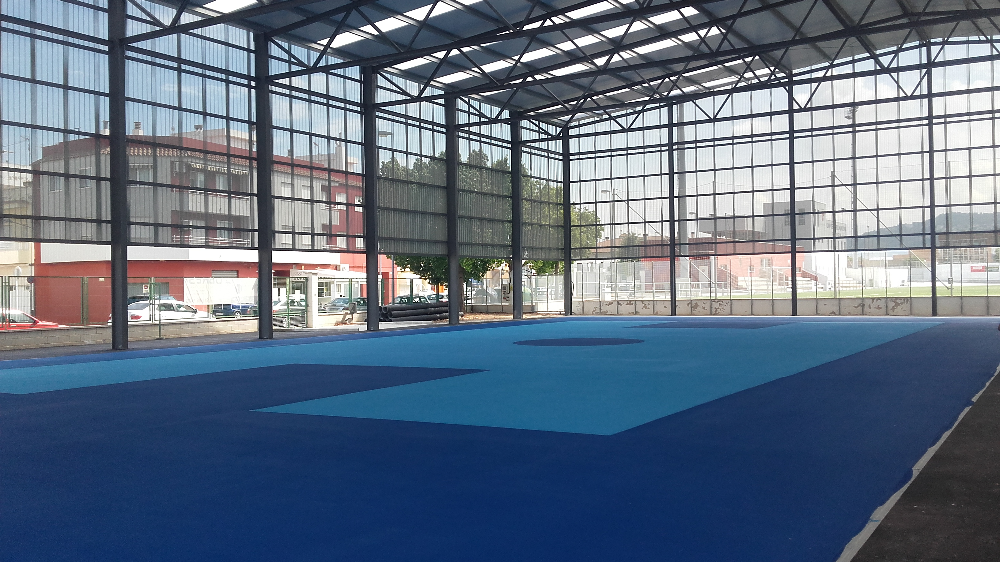
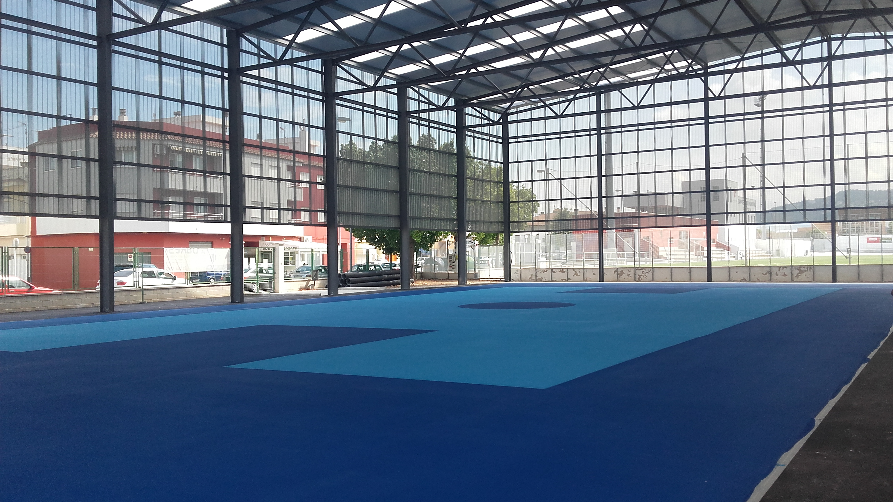

Sobre Obresa
Construyendo tu futuro
Fundada en 2012 por un grupo de profesionales con una dilatada experiencia en el sector de la construcción.
El sector de la obra pública ha sido la línea de negocio tradicional de la empresa, que cuenta con una solvencia reconocida a nivel autonómico en la ejecución de obra civil y edificación pública.
 

Con una división especializada de la plantilla propia de la empresa, compuesta por técnicos y personal de obra específico experto en la rehabilitación estructural y de fachadas de edificios, especialmente las sometidas a condiciones climatológicas agresivas (ambientes marinos, actividades industriales intensivas, etc.).


Ofrecemos un servicio de gestión integral del proyecto, desde su concepción y diseño, hasta su tramitación, construcción y finalización bajo la modalidad de “llaves en mano”.


Ha sido la apuesta más ambiciosa de la empresa en los últimos años y la que ha conseguido dar proyección nacional a Obresa. La homologación de la constructora por parte del mayor grupo de hostelería de España (Grupo Zena – Alsea) para la ejecución de locales comerciales de sus enseñas insignia Foster's Hollywood y Domino's Pizza por toda España (incluidas las islas Baleares y Canarias) ha propiciado un salto cualitativo y organizativo de la mercantil de manera que nos permite en la actualidad acometer proyectos de envergadura por toda España y ampliar así nuestro horizonte de mercado.
Ante un nicho de mercado en auge progresivo, la empresa ha destinado sendos equipos de manera permanente para efectuar tareas de mantenimiento industrial, de manera que ofrece servicio, eficacia y rapidez ante cualquier incidencia, no sólo en tareas de conservación ordinarias, sino también para la proyección de naves de nueva ejecución o ampliación de las existentes.
Las instalaciones centrales de la empresa se emplazan en un edificio de oficinas, un recinto de estacionamiento y una nave de almacenamiento, sitos en la Av de Valencia, núms. 37 y 52, de Gandía (Valencia).